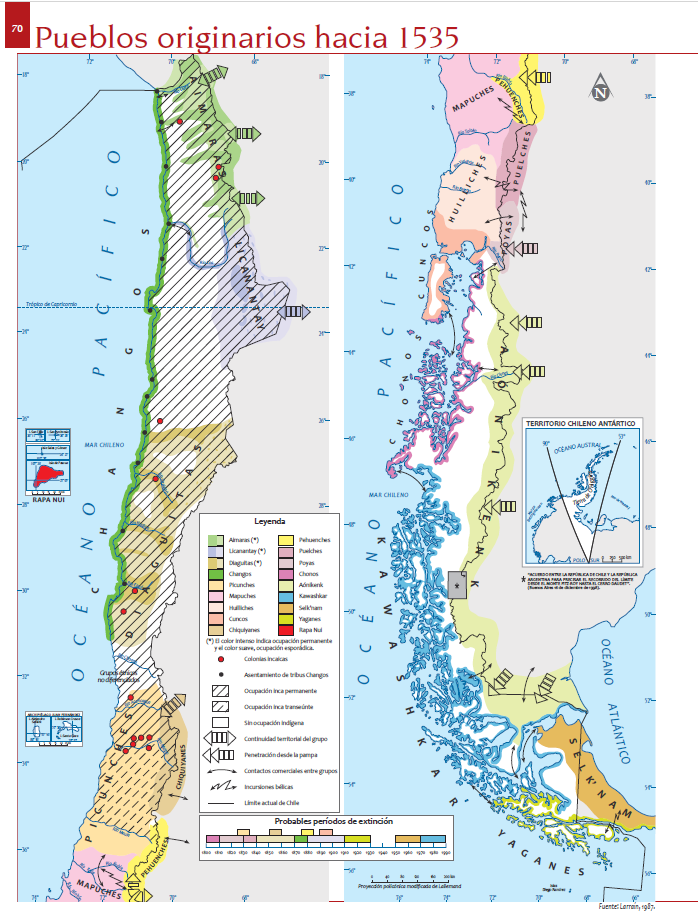
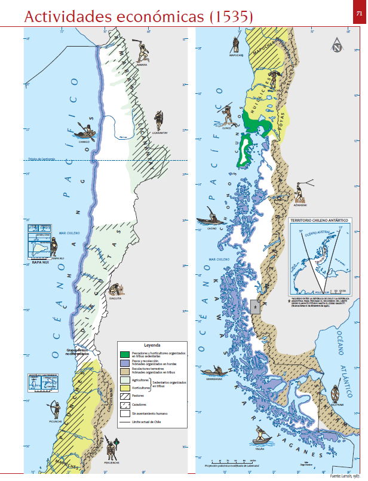
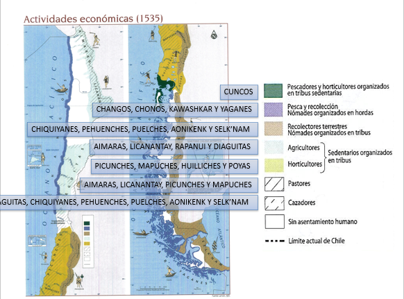

Pueblos originarios de Chile.
Distribución territorial y actividades económicas hacia 1535.
Pueblos originarios hacia 1535
Usa la leyenda para localizar a cada pueblo. Toca el mapa para abrirlo en tamaño completo.

Pueblos de la leyenda
Aimaras, Licanantay, Diaguitas, Changos, Picunches, Mapuches, Huilliches, Cuncos, Chiquiyanes, Pehuenches, Puelches, Poyas, Chonos, Aónikenk, Kawashkar, Selk’nam, Yaganes y Rapa Nui.
Actividades económicas hacia 1535
Estas asociaciones siguen la guía de referencia. Un pueblo puede aparecer en más de una actividad.
- Pesca y horticultura
- Cuncos.
- Pesca y recolección
- Changos, Chonos, Kawashkar y Yaganes.
- Recolección terrestre
- Chiquiyanes, Pehuenches, Puelches, Aónikenk y Selk’nam.
- Agricultura
- Aimaras, Licanantay, Rapa Nui y Diaguitas.
- Horticultura
- Picunches, Mapuches, Huilliches y Poyas.
- Pastoreo
- Aimaras, Licanantay, Picunches y Mapuches.
- Caza
- Diaguitas, Chiquiyanes, Pehuenches, Puelches, Aónikenk y Selk’nam.
Mapa de actividades económicas

Guía de actividades por pueblo
